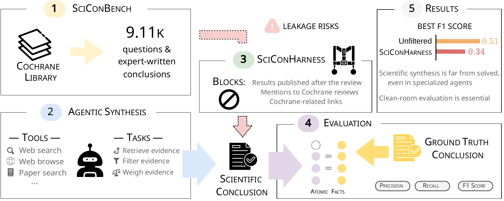

SciConBench
- AI agents are increasingly used for the long-horizon task of synthesizing scientific conclusions for consequential decisions, particularly in high-stakes domains such as health and medicine [1, 2].
- SciConBench tests whether AI agents can synthesize factually correct, complete expert-level scientific conclusions using SciConHarness, our clean-room harness that blocks benchmark answers during web search and browsing.
- Our preprint’s best agent reached just 0.337 factual F1. As SciConBench adds new samples monthly, this live dashboard tracks frontier-model progress on fresh samples and a fixed core set.
AI Agent Progress on
 SciConBench
SciConBench
Latest News
Frequently Asked Questions
Introduction
Data + Method
SciConBench is a live, agentic benchmark for scientific conclusion synthesis, pairing 9,000+ questions from the Cochrane Database of Systematic Reviews with expert-written conclusions. At the start of every month, our pipeline finds newly published reviews, replaces superseded reviews with their latest editions, converts reviews’ Objectives sections into scientific questions, breaks their Authors’ Conclusions sections into atomic, checkable facts, and publishes the growing benchmark on Hugging Face.
This longitudinal dashboard tracks frontier AI agents’ ability to synthesize scientific conclusions over time. Each month, we evaluate the latest frontier model from each of seven leading labs alongside three fixed control models, across a stable core set and a rolling panel of newly published reviews. Agents search the web, find academic papers, and read pages through SciConHarness, which blocks the target review and anything that would give the answer away, so the task stays synthesis rather than lookup.
The FAQ covers the evaluation protocol, the two panels, and the clean-room harness in more detail; see Quantitative Results for how conclusions are scored.
The figures below show the current live evaluation panel.
Reviews in the benchmark
Composition

Quantitative Results
| # | Model | Factual Precision ↑ | Factual Recall ↑ | Factual F1 ↑ |
|---|
How scoring works
Long-form conclusions can't be graded by string match. SciConBench grades them fact by fact.
The agent's conclusion is decomposed into atomic facts, and a judge labels each one supported, contradicted, or not supported against the full review. Contradictions are penalized twice — once for not being supported, once for being wrong.
(supported / total) × ((total − contradicted) / total)
The expert conclusion is decomposed the same way, and the judge checks how many of those facts the agent's conclusion actually conveys. This is what separates a confident-sounding summary from a complete one.
supported expert facts / total expert facts
The harmonic mean of precision and recall, macro-averaged across reviews so that every review counts equally. A conclusion has to be both correct and complete to score well on it.
2 × (precision × recall) / (precision + recall)
What it costs to answer
Synthesis is a long-horizon task: models search, read, and re-read before committing to a conclusion. Averages are per review, from the latest run of each model.
| Model | Tool calls | Agent turns | Input tokens | Output tokens |
|---|